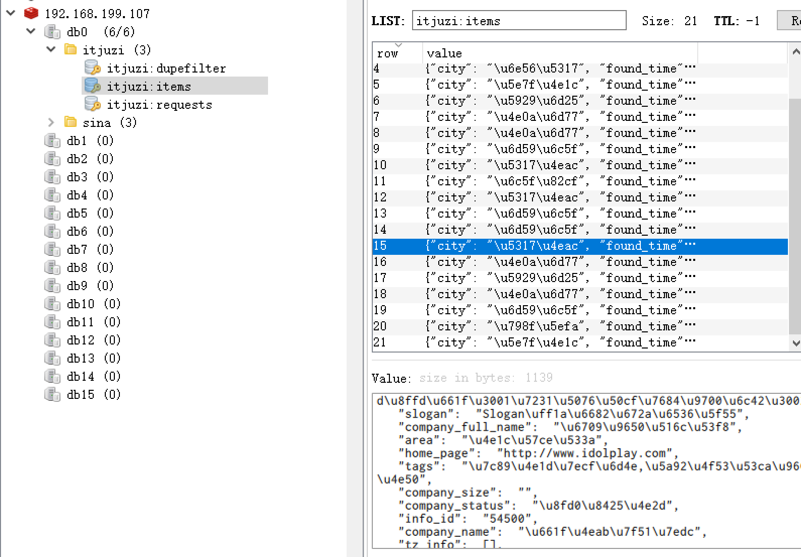
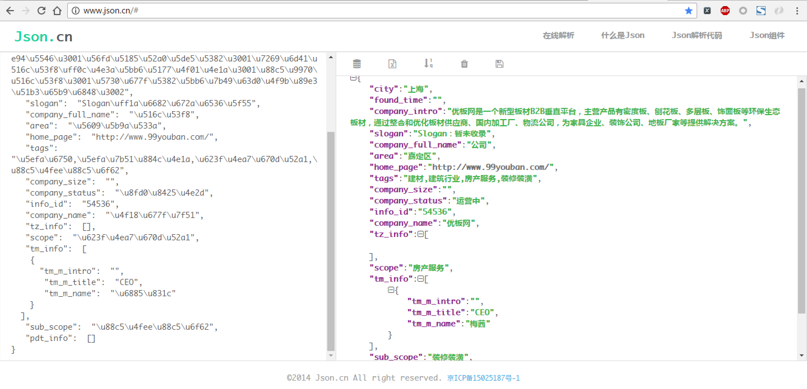

项目实现：
items.py
# items.py
# -*- coding: utf-8 -*-
import scrapy
class CompanyItem(scrapy.Item):
# 公司id (url数字部分)
info_id = scrapy.Field()
# 公司名称
company_name = scrapy.Field()
# 公司口号
slogan = scrapy.Field()
# 分类
scope = scrapy.Field()
# 子分类
sub_scope = scrapy.Field()
# 所在城市
city = scrapy.Field()
# 所在区域
area = scrapy.Field()
# 公司主页
home_page = scrapy.Field()
# 公司标签
tags = scrapy.Field()
# 公司简介
company_intro = scrapy.Field()
# 公司全称：
company_full_name = scrapy.Field()
# 成立时间：
found_time = scrapy.Field()
# 公司规模：
company_size = scrapy.Field()
# 运营状态
company_status = scrapy.Field()
# 投资情况列表：包含获投时间、融资阶段、融资金额、投资公司
tz_info = scrapy.Field()
# 团队信息列表：包含成员姓名、成员职称、成员介绍
tm_info = scrapy.Field()
# 产品信息列表：包含产品名称、产品类型、产品介绍
pdt_info = scrapy.Field()
settings.py
# -*- coding: utf-8 -*-
BOT_NAME = 'itjuzi'
SPIDER_MODULES = ['itjuzi.spiders']
NEWSPIDER_MODULE = 'itjuzi.spiders'
# Enables scheduling storing requests queue in redis.
SCHEDULER = "scrapy_redis.scheduler.Scheduler"
# Ensure all spiders share same duplicates filter through redis.
DUPEFILTER_CLASS = "scrapy_redis.dupefilter.RFPDupeFilter"
# REDIS_START_URLS_AS_SET = True
COOKIES_ENABLED = False
DOWNLOAD_DELAY = 1.5
# 支持随机下载延迟
RANDOMIZE_DOWNLOAD_DELAY = True
# Obey robots.txt rules
ROBOTSTXT_OBEY = False
ITEM_PIPELINES = {
'scrapy_redis.pipelines.RedisPipeline': 300
}
DOWNLOADER_MIDDLEWARES = {
# 该中间件将会收集失败的页面，并在爬虫完成后重新调度。（失败情况可能由于临时的问题，例如连接超时或者HTTP 500错误导致失败的页面）
'scrapy.downloadermiddlewares.retry.RetryMiddleware': 80,
# 该中间件提供了对request设置HTTP代理的支持。您可以通过在 Request 对象中设置 proxy 元数据来开启代理。
'scrapy.downloadermiddlewares.httpproxy.HttpProxyMiddleware': 100,
'itjuzi.middlewares.RotateUserAgentMiddleware': 200,
}
REDIS_HOST = "192.168.199.108"
REDIS_PORT = 6379
middlewares.py
# -*- coding: utf-8 -*-
from scrapy.contrib.downloadermiddleware.useragent import UserAgentMiddleware
import random
# User-Agetn 下载中间件
class RotateUserAgentMiddleware(UserAgentMiddleware):
def __init__(self, user_agent=''):
self.user_agent = user_agent
def process_request(self, request, spider):
# 这句话用于随机选择user-agent
ua = random.choice(self.user_agent_list)
request.headers.setdefault('User-Agent', ua)
user_agent_list = [
"Mozilla/5.0 (Windows NT 6.1; WOW64) AppleWebKit/537.1 (KHTML, like Gecko) Chrome/22.0.1207.1 Safari/537.1",
"Mozilla/5.0 (X11; CrOS i686 2268.111.0) AppleWebKit/536.11 (KHTML, like Gecko) Chrome/20.0.1132.57 Safari/536.11",
"Mozilla/5.0 (Windows NT 6.1; WOW64) AppleWebKit/536.6 (KHTML, like Gecko) Chrome/20.0.1092.0 Safari/536.6",
"Mozilla/5.0 (Windows NT 6.2) AppleWebKit/536.6 (KHTML, like Gecko) Chrome/20.0.1090.0 Safari/536.6",
"Mozilla/5.0 (Windows NT 6.2; WOW64) AppleWebKit/537.1 (KHTML, like Gecko) Chrome/19.77.34.5 Safari/537.1",
"Mozilla/5.0 (X11; Linux x86_64) AppleWebKit/536.5 (KHTML, like Gecko) Chrome/19.0.1084.9 Safari/536.5",
"Mozilla/5.0 (Windows NT 6.0) AppleWebKit/536.5 (KHTML, like Gecko) Chrome/19.0.1084.36 Safari/536.5",
"Mozilla/5.0 (Windows NT 6.1; WOW64) AppleWebKit/536.3 (KHTML, like Gecko) Chrome/19.0.1063.0 Safari/536.3",
"Mozilla/5.0 (Windows NT 5.1) AppleWebKit/536.3 (KHTML, like Gecko) Chrome/19.0.1063.0 Safari/536.3",
"Mozilla/5.0 (Macintosh; Intel Mac OS X 10_8_0) AppleWebKit/536.3 (KHTML, like Gecko) Chrome/19.0.1063.0 Safari/536.3",
"Mozilla/5.0 (Windows NT 6.2) AppleWebKit/536.3 (KHTML, like Gecko) Chrome/19.0.1062.0 Safari/536.3",
"Mozilla/5.0 (Windows NT 6.1; WOW64) AppleWebKit/536.3 (KHTML, like Gecko) Chrome/19.0.1062.0 Safari/536.3",
"Mozilla/5.0 (Windows NT 6.2) AppleWebKit/536.3 (KHTML, like Gecko) Chrome/19.0.1061.1 Safari/536.3",
"Mozilla/5.0 (Windows NT 6.1; WOW64) AppleWebKit/536.3 (KHTML, like Gecko) Chrome/19.0.1061.1 Safari/536.3",
"Mozilla/5.0 (Windows NT 6.1) AppleWebKit/536.3 (KHTML, like Gecko) Chrome/19.0.1061.1 Safari/536.3",
"Mozilla/5.0 (Windows NT 6.2) AppleWebKit/536.3 (KHTML, like Gecko) Chrome/19.0.1061.0 Safari/536.3",
"Mozilla/5.0 (X11; Linux x86_64) AppleWebKit/535.24 (KHTML, like Gecko) Chrome/19.0.1055.1 Safari/535.24",
"Mozilla/5.0 (Windows NT 6.2; WOW64) AppleWebKit/535.24 (KHTML, like Gecko) Chrome/19.0.1055.1 Safari/535.24",
"Mozilla/5.0 (Windows; U; Windows NT 5.1; en-US) AppleWebKit/531.21.8 (KHTML, like Gecko) Version/4.0.4 Safari/531.21.10",
"Mozilla/5.0 (Windows; U; Windows NT 5.2; en-US) AppleWebKit/533.17.8 (KHTML, like Gecko) Version/5.0.1 Safari/533.17.8",
"Mozilla/5.0 (Windows; U; Windows NT 6.1; en-US) AppleWebKit/533.19.4 (KHTML, like Gecko) Version/5.0.2 Safari/533.18.5",
"Mozilla/5.0 (Windows; U; Windows NT 6.1; en-GB; rv:1.9.1.17) Gecko/20110123 (like Firefox/3.x) SeaMonkey/2.0.12",
"Mozilla/5.0 (Windows NT 5.2; rv:10.0.1) Gecko/20100101 Firefox/10.0.1 SeaMonkey/2.7.1",
"Mozilla/5.0 (Macintosh; U; Intel Mac OS X 10_5_8; en-US) AppleWebKit/532.8 (KHTML, like Gecko) Chrome/4.0.302.2 Safari/532.8",
"Mozilla/5.0 (Macintosh; U; Intel Mac OS X 10_6_4; en-US) AppleWebKit/534.3 (KHTML, like Gecko) Chrome/6.0.464.0 Safari/534.3",
"Mozilla/5.0 (Macintosh; U; Intel Mac OS X 10_6_5; en-US) AppleWebKit/534.13 (KHTML, like Gecko) Chrome/9.0.597.15 Safari/534.13",
"Mozilla/5.0 (Macintosh; Intel Mac OS X 10_7_2) AppleWebKit/535.1 (KHTML, like Gecko) Chrome/14.0.835.186 Safari/535.1",
"Mozilla/5.0 (Macintosh; Intel Mac OS X 10_6_8) AppleWebKit/535.2 (KHTML, like Gecko) Chrome/15.0.874.54 Safari/535.2",
"Mozilla/5.0 (Macintosh; Intel Mac OS X 10_6_8) AppleWebKit/535.7 (KHTML, like Gecko) Chrome/16.0.912.36 Safari/535.7",
"Mozilla/5.0 (Macintosh; U; Mac OS X Mach-O; en-US; rv:2.0a) Gecko/20040614 Firefox/3.0.0 ",
"Mozilla/5.0 (Macintosh; U; PPC Mac OS X 10.5; en-US; rv:1.9.0.3) Gecko/2008092414 Firefox/3.0.3",
"Mozilla/5.0 (Macintosh; U; Intel Mac OS X 10.5; en-US; rv:1.9.1) Gecko/20090624 Firefox/3.5",
"Mozilla/5.0 (Macintosh; U; Intel Mac OS X 10.6; en-US; rv:1.9.2.14) Gecko/20110218 AlexaToolbar/alxf-2.0 Firefox/3.6.14",
"Mozilla/5.0 (Macintosh; U; PPC Mac OS X 10.5; en-US; rv:1.9.2.15) Gecko/20110303 Firefox/3.6.15",
"Mozilla/5.0 (Macintosh; Intel Mac OS X 10.6; rv:2.0.1) Gecko/20100101 Firefox/4.0.1"
]
spiders/juzi.py
# -*- coding: utf-8 -*-
from bs4 import BeautifulSoup
from scrapy.linkextractors import LinkExtractor
from scrapy.spiders import CrawlSpider, Rule
from scrapy_redis.spiders import RedisCrawlSpider
from itjuzi.items import CompanyItem
class ITjuziSpider(RedisCrawlSpider):
name = 'itjuzi'
allowed_domains = ['www.itjuzi.com']
# start_urls = ['http://www.itjuzi.com/company']
redis_key = 'itjuzispider:start_urls'
rules = [
# 获取每一页的链接
Rule(link_extractor=LinkExtractor(allow=('/company\?page=\d+'))),
# 获取每一个公司的详情
Rule(link_extractor=LinkExtractor(allow=('/company/\d+')), callback='parse_item')
]
def parse_item(self, response):
soup = BeautifulSoup(response.body, 'lxml')
# 开头部分： //div[@class="infoheadrow-v2 ugc-block-item"]
cpy1 = soup.find('div', class_='infoheadrow-v2')
if cpy1:
# 公司名称：//span[@class="title"]/b/text()[1]
company_name = cpy1.find(class_='title').b.contents[0].strip().replace('\t', '').replace('\n', '')
# 口号： //div[@class="info-line"]/p
slogan = cpy1.find(class_='info-line').p.get_text()
# 分类：子分类//span[@class="scope c-gray-aset"]/a[1]
scope_a = cpy1.find(class_='scope c-gray-aset').find_all('a')
# 分类：//span[@class="scope c-gray-aset"]/a[1]
scope = scope_a[0].get_text().strip() if len(scope_a) > 0 else ''
# 子分类：# //span[@class="scope c-gray-aset"]/a[2]
sub_scope = scope_a[1].get_text().strip() if len(scope_a) > 1 else ''
# 城市+区域：//span[@class="loca c-gray-aset"]/a
city_a = cpy1.find(class_='loca c-gray-aset').find_all('a')
# 城市：//span[@class="loca c-gray-aset"]/a[1]
city = city_a[0].get_text().strip() if len(city_a) > 0 else ''
# 区域：//span[@class="loca c-gray-aset"]/a[2]
area = city_a[1].get_text().strip() if len(city_a) > 1 else ''
# 主页：//a[@class="weblink marl10"]/@href
home_page = cpy1.find(class_='weblink marl10')['href']
# 标签：//div[@class="tagset dbi c-gray-aset"]/a
tags = cpy1.find(class_='tagset dbi c-gray-aset').get_text().strip().strip().replace('\n', ',')
#基本信息：//div[@class="block-inc-info on-edit-hide"]
cpy2 = soup.find('div', class_='block-inc-info on-edit-hide')
if cpy2:
# 公司简介：//div[@class="block-inc-info on-edit-hide"]//div[@class="des"]
company_intro = cpy2.find(class_='des').get_text().strip()
# 公司全称：成立时间：公司规模：运行状态：//div[@class="des-more"]
cpy2_content = cpy2.find(class_='des-more').contents
# 公司全称：//div[@class="des-more"]/div[1]
company_full_name = cpy2_content[1].get_text().strip()[len('公司全称：'):] if cpy2_content[1] else ''
# 成立时间：//div[@class="des-more"]/div[2]/span[1]
found_time = cpy2_content[3].contents[1].get_text().strip()[len('成立时间：'):] if cpy2_content[3] else ''
# 公司规模：//div[@class="des-more"]/div[2]/span[2]
company_size = cpy2_content[3].contents[3].get_text().strip()[len('公司规模：'):] if cpy2_content[3] else ''
#运营状态：//div[@class="des-more"]/div[3]
company_status = cpy2_content[5].get_text().strip() if cpy2_content[5] else ''
# 主体信息：
main = soup.find('div', class_='main')
# 投资情况：//table[@class="list-round-v2 need2login"]
# 投资情况，包含获投时间、融资阶段、融资金额、投资公司
tz = main.find('table', 'list-round-v2')
tz_list = []
if tz:
all_tr = tz.find_all('tr')
for tr in all_tr:
tz_dict = {}
all_td = tr.find_all('td')
tz_dict['tz_time'] = all_td[0].span.get_text().strip()
tz_dict['tz_round'] = all_td[1].get_text().strip()
tz_dict['tz_finades'] = all_td[2].get_text().strip()
tz_dict['tz_capital'] = all_td[3].get_text().strip().replace('\n', ',')
tz_list.append(tz_dict)
# 团队信息：成员姓名、成员职称、成员介绍
tm = main.find('ul', class_='list-prodcase limited-itemnum')
tm_list = []
if tm:
for li in tm.find_all('li'):
tm_dict = {}
tm_dict['tm_m_name'] = li.find('span', class_='c').get_text().strip()
tm_dict['tm_m_title'] = li.find('span', class_='c-gray').get_text().strip()
tm_dict['tm_m_intro'] = li.find('p', class_='mart10 person-des').get_text().strip()
tm_list.append(tm_dict)
# 产品信息：产品名称、产品类型、产品介绍
pdt = main.find('ul', class_='list-prod limited-itemnum')
pdt_list = []
if pdt:
for li in pdt.find_all('li'):
pdt_dict = {}
pdt_dict['pdt_name'] = li.find('h4').b.get_text().strip()
pdt_dict['pdt_type'] = li.find('span', class_='tag yellow').get_text().strip()
pdt_dict['pdt_intro'] = li.find(class_='on-edit-hide').p.get_text().strip()
pdt_list.append(pdt_dict)
item = CompanyItem()
item['info_id'] = response.url.split('/')[-1:][0]
item['company_name'] = company_name
item['slogan'] = slogan
item['scope'] = scope
item['sub_scope'] = sub_scope
item['city'] = city
item['area'] = area
item['home_page'] = home_page
item['tags'] = tags
item['company_intro'] = company_intro
item['company_full_name'] = company_full_name
item['found_time'] = found_time
item['company_size'] = company_size
item['company_status'] = company_status
item['tz_info'] = tz_list
item['tm_info'] = tm_list
item['pdt_info'] = pdt_list
return item
scrapy.cfg
# Automatically created by: scrapy startproject
#
# For more information about the [deploy] section see:
# https://scrapyd.readthedocs.org/en/latest/deploy.html
[settings]
default = itjuzi.settings
[deploy]
#url = http://localhost:6800/
project = itjuzi
运行：
Slave端：
scrapy runspider juzi.py
Master端：
redis-cli > lpush itjuzispider:start_urls http://www.itjuzi.com/company
演示效果：

